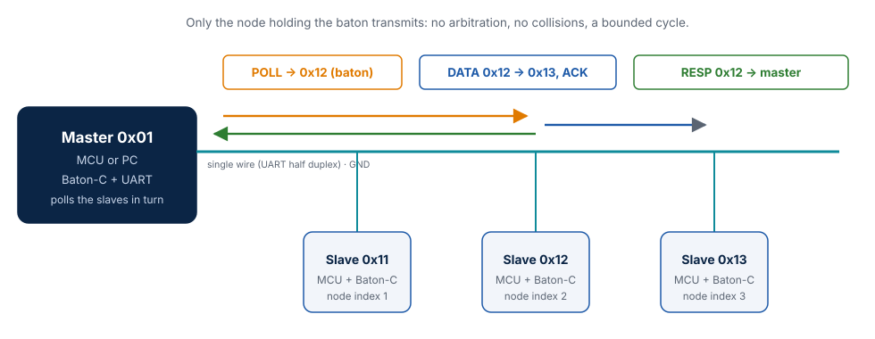
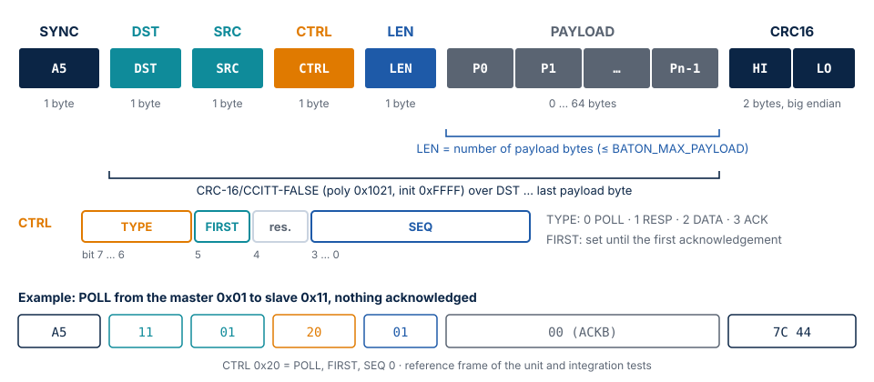
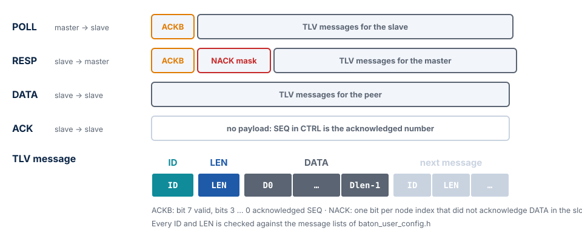
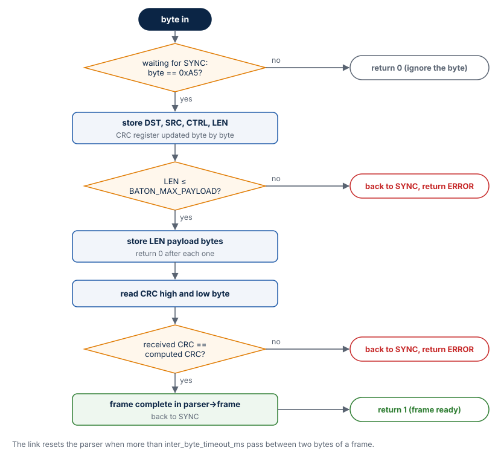
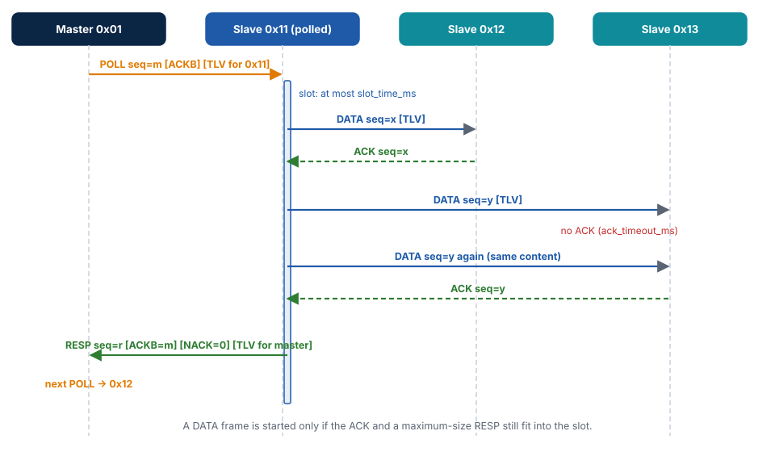

Baton bus protocol¶
This chapter specifies the Baton bus protocol — the bytes on the wire, the slot schedule
and the delivery rules — and says exactly what Baton-C does with each part. It is the
specification of the protocol: other implementations (for example the Python twin in
tests/integration/baton/protocol.py) are checked against it.
The bus¶

| Property | Value |
|---|---|
| Medium | One shared UART line: single wire (TX and RX on one pin), open-drain, or RS-485 |
| Character format | 8N1: 10 bits per byte, 1.04 ms per byte at 9600 bit/s |
| Nodes | One master and 1..31 slaves (BATON_MAX_NODES 2..32), addresses 0x00..0xFE |
| Topology | Identical on every node: master address and the slave list in polling order |
| Access | Only the polled slave transmits, for at most slot_time_ms; other slaves send only ACKs to DATA addressed to them |
| Turnaround | Before transmitting, a node waits for tx_gap_ms of silence on the line |
The address 0xFF (BATON_ADDR_BROADCAST) is reserved: it selects "every other node" in
baton_node_send() and never appears in a frame.
Frame¶

| Offset | Field | Size | Description |
|---|---|---|---|
| 0 | SYNC | 1 | 0xA5, start of a frame |
| 1 | DST | 1 | Destination address |
| 2 | SRC | 1 | Source address |
| 3 | CTRL | 1 | TYPE[7:6], FIRST[5], reserved [4] (0), SEQ[3:0] |
| 4 | LEN | 1 | Number of payload bytes, 0..BATON_MAX_PAYLOAD (at most 250) |
| 5 | PAYLOAD | LEN | Depends on the frame type, see below |
| 5 + LEN | CRC16 | 2 | CRC-16/CCITT-FALSE over DST..PAYLOAD, high byte first |
The overhead is 7 bytes. An ACK (no payload) takes 7 bytes, 8 ms at 9600 bit/s; a maximum frame with the default 64-byte payload takes 71 bytes, 74 ms.
Checksum¶
CRC-16/CCITT-FALSE: polynomial 0x1021, initial value 0xFFFF, no reflection, no final
XOR. It covers DST, SRC, CTRL, LEN and the payload — not SYNC. The check value of the
catalogue ("123456789") is 0x29B1; it is a unit test. Baton-C computes it bit by bit
without a table (no 512-byte table in flash; at 9600 bit/s the cost does not matter).
Frame types and payloads¶

| TYPE | Name | Direction | Payload |
|---|---|---|---|
| 0 | POLL | master → slave | ACKB, then messages for this slave |
| 1 | RESP | slave → master | ACKB, NACK mask, then messages for the master |
| 2 | DATA | slave → slave | Messages for the destination |
| 3 | ACK | slave → slave | None; SEQ in CTRL is the acknowledged sequence number |
- ACKB (1 byte): bit 7 = valid, bits 3..0 = acknowledged sequence number. In a POLL it acknowledges the last RESP with content from this slave; in a RESP it acknowledges the POLL that started the slot.
- NACK (
(BATON_MAX_NODES + 7) / 8bytes, little endian): the node mask of the slaves that did not acknowledge a DATA frame of this slave in this slot.
Messages (TLV)¶
A payload carries messages back to back, each as ID, LEN, DATA[LEN]. One frame
carries up to BATON_MAX_MSGS_PER_FRAME messages. The receiver checks every ID and
LEN against the message lists of baton_user_config.h; an unknown id or a length
above the MAX_LEN of the message is skipped and counted in bad_messages, a truncated
record ends the payload. The largest MAX_LEN is
BATON_MAX_MSG_LEN = BATON_MAX_PAYLOAD − 3 − BATON_MASK_BYTES, so that one message fits
into every frame type.
Parser behavior¶

baton_parser_feed() takes one byte per call:
- Between frames it waits for
0xA5; other bytes are ignored. - It stores DST, SRC, CTRL and LEN, updating the CRC register with each byte.
- A LEN above
BATON_MAX_PAYLOADis rejected as soon as it is read: returnBATON_PARSE_ERROR, wait for SYNC. - It stores LEN payload bytes, then the two CRC bytes.
- A matching CRC returns
1(the frame is inparser->frame); a mismatch returnsBATON_PARSE_ERROR. Either way the parser waits for the next SYNC.
Recovery: the bytes of a rejected frame are not scanned again for a SYNC byte. The link
resets the parser when more than inter_byte_timeout_ms pass between two bytes of a
frame, so a frame cut off by noise costs at most that timeout. A corrupted parser
structure (state or index out of range) is detected and reset instead of writing out of
bounds; this is a unit test.
The slot¶

- The master sends a POLL to the next slave in
slave_addresses, carrying the master's messages for it. - The polled slave owns the slot. For every other slave with pending messages it:
- packs them into a DATA frame that fits the remaining time budget,
- waits up to
ack_timeout_msfor the ACK and retries up tomax_retriestimes, - after an ACK, serves the same peer again if it has more.
- Finally the slave sends a RESP: it acknowledges the POLL, reports the NACK mask and carries messages for the master.
- The master moves on after the RESP or after a timeout.
Each slot starts with a different peer (round robin), so no slave is always served last.
Delivery rules¶
Stop-and-wait per channel¶
Every ordered pair of nodes has an independent channel with a 4-bit sequence number:
- A sender has at most one unacknowledged frame with content per channel.
- A retransmission has the same SEQ and the same messages. It is rebuilt from references into the queue, so no copy of the frame is kept.
- SEQ advances only after an acknowledgement: an ACK, the ACKB of a RESP, or the ACKB of a POLL.
- The receiver remembers the last accepted SEQ of each sender. A frame with the same
number is acknowledged again but not delivered, and counted in
duplicates. Events are therefore delivered exactly once. - Frames without content (POLL or RESP without messages) do not take part in sequencing: the receiver does not filter them, and the master does not acknowledge an empty RESP. An empty frame therefore never acknowledges the next frame with content in advance.
FIRST flag¶
After baton_node_init() a sender sets FIRST in each channel until its first
acknowledgement. A receiver accepts a FIRST frame even when its SEQ equals the last
accepted one, unless that one was also a FIRST frame with the same SEQ (a
retransmission). A sender that restarts is therefore not mistaken for a duplicate.
Order¶
Events from one sender to one destination with the same priority arrive in the order they were sent: packing never skips a message of a queue. HIGH events may overtake NORMAL ones.
Abandoned content¶
When every event of an unacknowledged frame expired (TTL), the channel advances SEQ, so new content is not mistaken for a duplicate.
Unreachable nodes¶
| Situation | Behavior |
|---|---|
| A slave does not acknowledge DATA | Its bit goes into the NACK mask of the RESP; the failure streak of the channel grows |
3 failures in a row (BATON_DEAD_STREAK) |
The peer is served last in the slot, once, without retry |
| A slave does not answer 3 POLLs in a row | The master polls it only every 4th cycle (BATON_DEAD_POLL_DIV) |
An event is not delivered within event_ttl_ms |
Removed; on_drop(msg_id, dst, missed_nodes) |
The first acknowledgement resets the failure streak. missed_nodes lists the nodes that
did not acknowledge the event: a node may still have received it when only its ACK was
lost. The reverse never happens — every loss is reported.
Time budget¶
F(n) is the duration of an n-byte frame, ⌈n · 10000 / baudrate⌉ ms;
Fmax = F(7 + BATON_MAX_PAYLOAD).
Slave. A DATA frame is started only if an ACK and a maximum RESP still fit:
available_ms = slot_time_ms − elapsed − (Fmax + 2·tx_gap_ms + 2) − tx_gap_ms − ack_timeout_ms
max_payload = min(available_ms · baudrate / 10000 − 7, BATON_MAX_PAYLOAD)
The RESP therefore always ends within slot_time_ms after the POLL, whatever the number
of peers and retries.
Master. It waits for the RESP slot_time_ms + tx_gap_ms + 10 ms after the end of the
POLL. If a frame is being received at that moment it waits for its end, but at most
twice as long.
Checked by baton_node_init():
slot_time_ms ≥ Fmax + 3·tx_gap_ms + 2 + ack_timeout_ms + F(7 + 2 + BATON_MAX_MSG_LEN)
ack_timeout_ms > F(7) + tx_gap_ms
For the defaults (9600 bit/s, 64-byte payload, gap 2 ms, ACK timeout 20 ms, slot 250 ms):
| Quantity | Value |
|---|---|
| Maximum frame (71 bytes) | 74 ms |
| ACK (7 bytes) | 8 ms |
| Minimum slot | 174 ms |
| Empty slot (POLL 8 bytes + RESP 9 bytes + gaps) | about 25 ms |
| Longest slot, POLL included | at most 74 + 2 + 250 + 12 ≈ 340 ms |
| Longest cycle with N slaves | about N × 340 ms |
The longest cycle depends only on the configuration. Heavy traffic makes messages wait longer in the queues; it does not make a slot longer.
Reference frames¶
Computed independently by the Python twin and used as unit and integration test vectors:
| Frame | Bytes |
|---|---|
| POLL 0x01 → 0x11, FIRST, SEQ 0, ACKB not valid | A5 11 01 20 01 00 7C 44 |
| ACK 0x11 → 0x12, SEQ 3 | A5 12 11 C3 00 45 5B |
| RESP 0x11 → 0x01, FIRST, SEQ 0, ACKB valid SEQ 0, NACK 0 | A5 01 11 60 02 80 00 C9 91 |
DATA 0x11 → 0x12, FIRST, SEQ 0, message 0x10 = AB CD |
A5 12 11 A0 04 10 02 AB CD D8 BA |